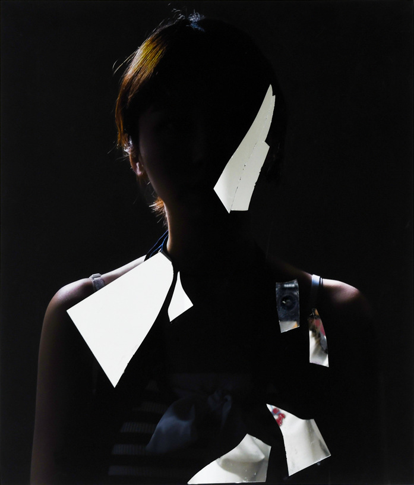

upcoming
소리, 자두, 조각
난청에 대한 자전적 경험을 토대로, 파괴된 앎의 조각들을 탐사해가는 사변적 에세이. 소리, 비인간, 물질세계의 관념에 대한 언러닝 프로젝트. 독립출판 예정
selected works

알고 보면
방어기제에 대한 탐구. 관객의 위치, 시선, 수행에 따라 의미가 발생하는 사진 시리즈

Seeing
'본다'는 것은 무엇인가? 시선에 내재한 왜곡을 탐구하는 사진 시리즈
Cori Makes Photo
현대적 맥락에서의 사진 매체 비평, 사진을 이용한 새로운 시도에 대한 메타-텍스트
인간-코드 감응: 시간
코드 이미지를 만들고 보며 느낀 감응에 대한 탐구코드의 행위성과 논리에 대한 객체지향적 경험
프로젝트의 역사
10대부터 20대 초반까지의 프로젝트 아카이브웹사이트 특정적 에세이
website-specific
'웹사이트 특정적'이라는 새로운 개념을 고안하고 실험하는 동안의 텍스트를 아카이브. 역시 웹사이트 특정적
옷장 앞에서 너무 많은 혼란을 겪었다
옷을 통한 젠더 표현과 관련한 생각의 변화를 여러 자아들의 대화로 구성한 이상하고 솔직한 에세이
For more works
Ⓒ 2023. Seungeun Jeoung All Rights Reserved.